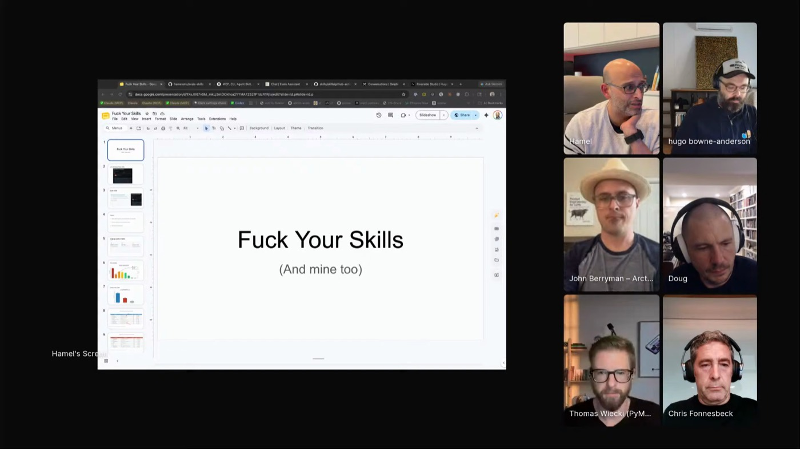
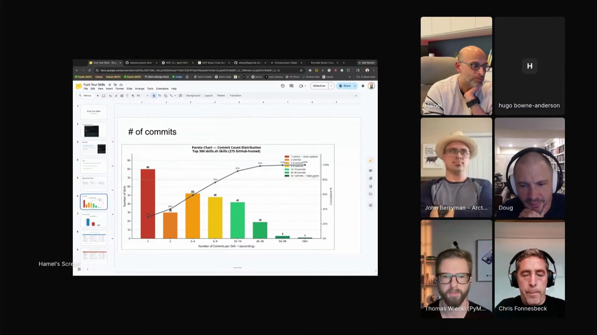
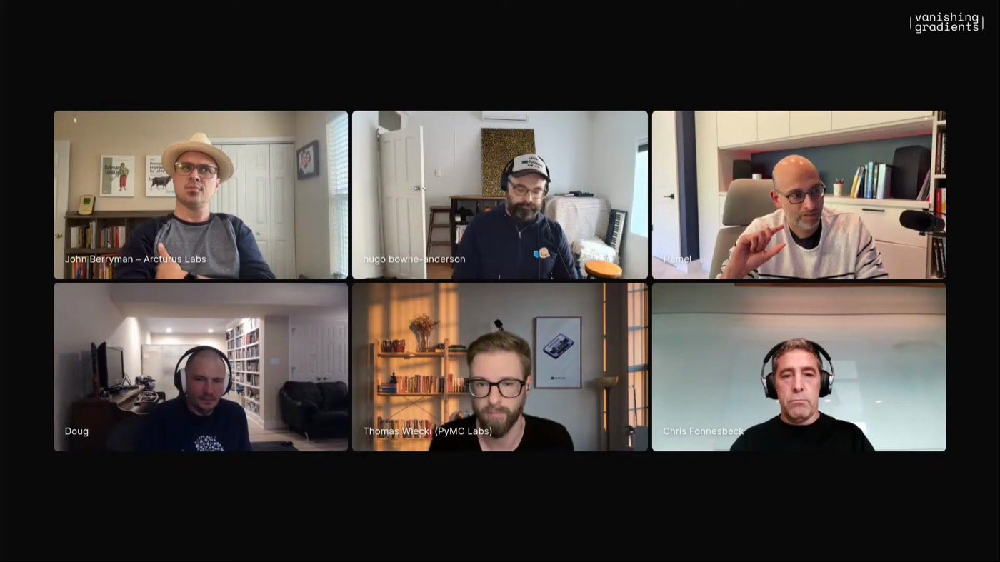

evals-skills
His published bundle: eval audit, RAG evaluation, error analysis, LLM-judge calibration. The object lesson for the whole talk. Read it, then make it yours, because it's a starting point, not the finish line.
 HAMEL HUSAIN
PARLANCE LABS · AI EVALS
SKILL-SCEPTICISM
EX AIRBNB · GITHUB
HAMEL HUSAIN
PARLANCE LABS · AI EVALS
SKILL-SCEPTICISM
EX AIRBNB · GITHUB
Hamel reads a shared agent skill before he trusts it: open the prompt, check whether the author still ships it, look for constraints that aren't just prose. Most public skills don't survive that read. The good ones carry real expertise anyway, and they only earn it once you've read them, his own bundle included.

Hamel is the eval guy: a course, thousands of hours of office hours and Q&A, 4,500+ people taught to measure LLM systems. He distilled the recurring problems into a published bundle of eval skills, then aimed his own critique at it first.
That bundle couldn't hold the real material. Multimodal evals, PII, golden datasets, human-calibrated judges: the nuance a student actually needs flattens into a markdown checklist.
So the answer he landed on isn't a skill at all. It's a course chatbot and an MCP server that search the source directly, so an agent gets the higher-fidelity answer instead of a summary. The rule that falls out cuts both ways: read it, check who maintains it, look for real constraints, his own skills included.

"I ended up hating my own skill."

"A lot of websites are still pre-AI."

His published bundle: eval audit, RAG evaluation, error analysis, LLM-judge calibration. The object lesson for the whole talk. Read it, then make it yours, because it's a starting point, not the finish line.
Searches his evals course sources directly and answers nuanced questions a markdown file would flatten. The MCP hands an agent the same access without anyone opening the web app.
Run a Maven task once while the agent learns the site's internal routes, then fill a lightning lesson or build a course page from saved API calls instead of thousands of clicks.
Anthropic's popular front-end skill. He used it, then stopped: "I just got tired of my websites looking the same." Age, commit history, and same-looking output all belong in the trust call.
Three commits, and when he opened the file it was basically a sitemap for the GitHub Actions docs. "That's all this skill is." If you already use the gh CLI, you may not need it.